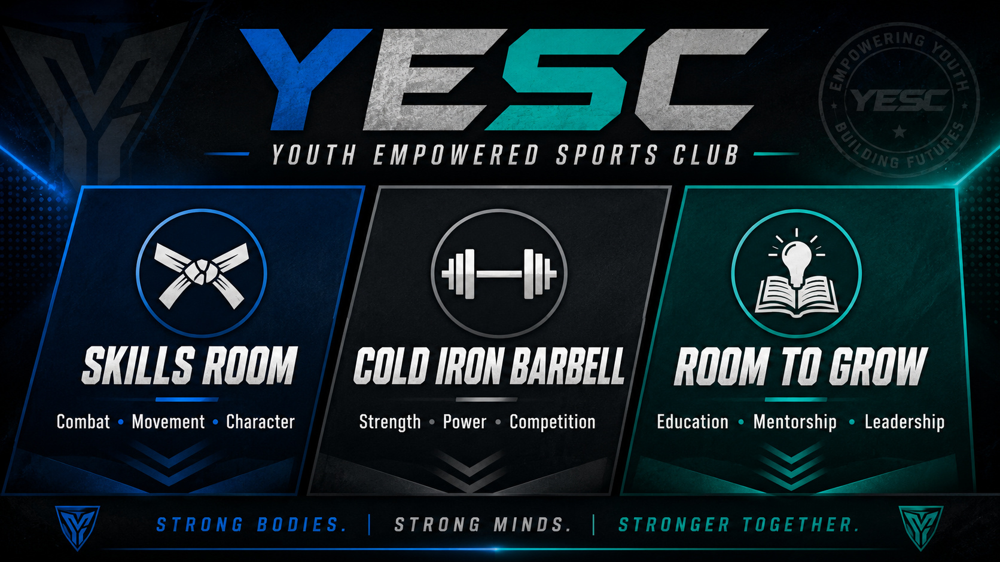

Open Mat Room
Coordination, balance, movement, strength, confidence, and character.

Youth Empowered Sports Club
Build fitness, develop strength, learn new skills, or train for competition. Choose the path that best matches your goals.
Youth Empowered Sports Club
Mejora tu condición física, desarrolla fuerza, aprende nuevas habilidades o entrena para competir. Elige el camino que mejor se adapte a tus objetivos.
One Place. Three Ways To Grow.
YESC — Youth Empowered Sports Club — is a community-centered training and development space built to help young people and families grow through movement, strength, education, and meaningful relationships.
Each room serves a different purpose. Together, they create one environment where athletes and families can strengthen the body, develop the mind, and build confidence for life.
Coordination, balance, movement, strength, confidence, and character.
Strength development, powerlifting, team training, and competition.
Education, mentoring, leadership, goal setting, and personal development.
Strong bodies. Strong minds. Stronger together.
Un Lugar. Tres Formas De Crecer.
YESC — Youth Empowered Sports Club — es un espacio comunitario de entrenamiento y desarrollo creado para ayudar a jóvenes y familias a crecer mediante el movimiento, la fuerza, la educación y relaciones significativas.
Cada salón tiene un propósito diferente. Juntos crean un ambiente donde los atletas y las familias pueden fortalecer el cuerpo, desarrollar la mente y construir confianza para la vida.
Coordinación, equilibrio, movimiento, fuerza, confianza y carácter.
Desarrollo de fuerza, powerlifting, entrenamiento en equipo y competencia.
Educación, mentoría, liderazgo, establecimiento de metas y desarrollo personal.
Cuerpos fuertes. Mentes fuertes. Más fuertes juntos.
Morning Movement
YESC — Youth Empowered Sports Club
A coach-led morning class built around movement, coordination, balance, strength, and positive energy.
Movimiento Matutino
YESC — Youth Empowered Sports Club
Una clase matutina dirigida por un coach que combina movimiento, coordinación, equilibrio, fuerza y energía.
Early-Morning Conditioning
YESC — Youth Empowered Sports Club
Early-morning Tabata-style workouts built around short intervals, full-body conditioning, strength, and endurance.
Acondicionamiento Temprano
YESC — Youth Empowered Sports Club
Entrenamientos estilo Tabata por la mañana con intervalos cortos, acondicionamiento de cuerpo completo, fuerza y resistencia.
Youth Fitness
YESC — Youth Empowered Sports Club
Movement, strength, coordination, conditioning, and confidence-building for younger athletes.
Fitness Infantil
YESC — Youth Empowered Sports Club
Movimiento, fuerza, coordinación, acondicionamiento y confianza para atletas jóvenes.
Teen Fitness • Light • Non-Contact
YESC — Youth Empowered Sports Club
Teen fitness combining strength, movement, conditioning, and optional light, non-contact bag and mitt work.
Fitness Juvenil • Ligero • Sin Contacto
YESC — Youth Empowered Sports Club
Fitness para adolescentes que combina fuerza, movimiento, acondicionamiento y trabajo ligero sin contacto con costal y manoplas.
45-Minute Classes
YESC — Youth Empowered Sports Club
Fast-moving, coach-led classes built around interval training, conditioning, strength, movement, and sustained effort.
Clases De 45 Minutos
YESC — Youth Empowered Sports Club
Clases dinámicas dirigidas por un coach que combinan intervalos, acondicionamiento, fuerza, movimiento y esfuerzo sostenido.
Ages 3–5
YESC — Youth Empowered Sports Club
A playful introduction to movement, coordination, confidence, listening, and learning through activity.
Edades 3–5
YESC — Youth Empowered Sports Club
Una introducción divertida al movimiento, coordinación, confianza, escucha y aprendizaje mediante la actividad.
Progressive Team Training
YESC — Cold Iron Barbell
Structured strength training built around progressive learning, coached development, team standards, and competition opportunities.
Entrenamiento Progresivo En Equipo
YESC — Cold Iron Barbell
Entrenamiento estructurado de fuerza basado en aprendizaje progresivo, desarrollo guiado por coaches, estándares de equipo y oportunidades de competencia.
Plan Your Week
View weekly class times, upcoming events, closures, assessments, and competition dates.
View Schedule & CalendarPlanea Tu Semana
Consulta los horarios semanales, próximos eventos, cierres, evaluaciones y fechas de competencia.
Ver Horario Y CalendarioNot Sure Where To Begin?
Start with a $15 drop-in. If you join, the $15 is credited toward your first month.
Book Your First Class¿No Sabes Por Dónde Empezar?
Comienza con una clase de $15. Si te inscribes, los $15 se aplican a tu primer mes.
Reserva Tu Primera Clase